1° TAPPA (Sab. 08/05)
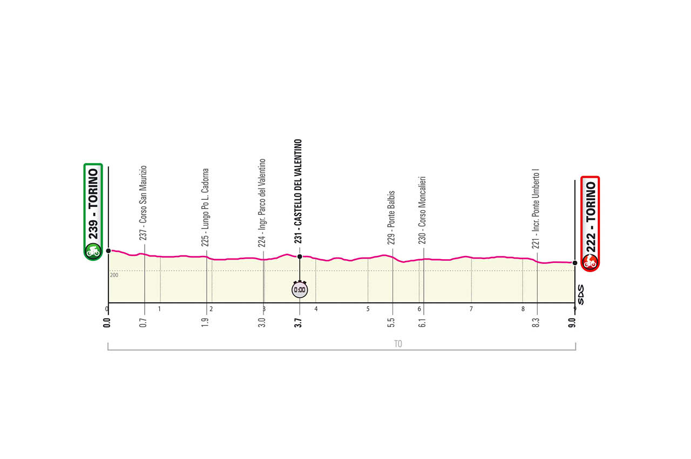
TORINO - TORINO TISSOT ITT: Crono cittadina con alcuni passaggi molto suggestivi specie lungo il PO, nel Parco del Valentino e con arrivo davanti alla Gran Madre.
2° TAPPA (Dom. 09/05)
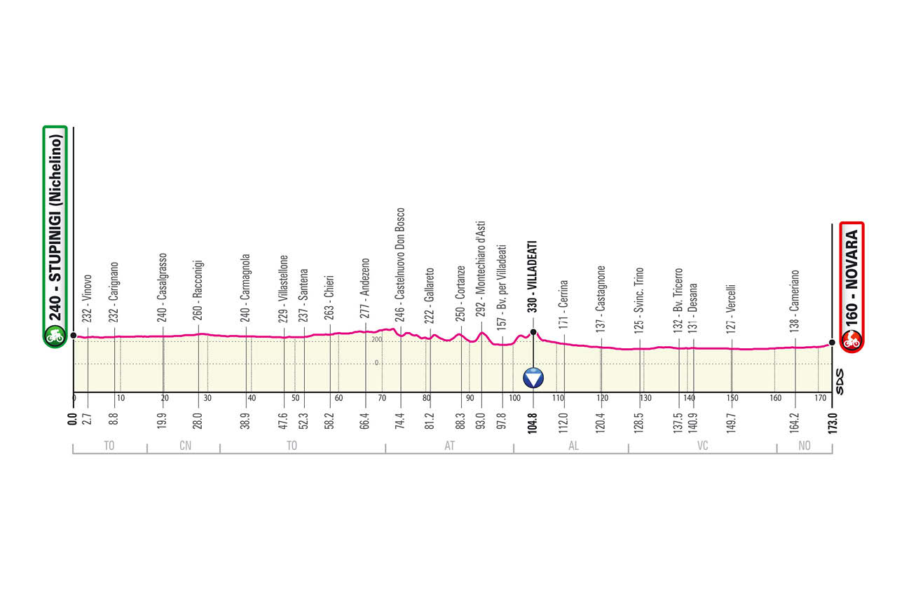
STUPINIGI (NICHELINO) - NOVARA: Tappa pianeggiante adatta ai velocisti che tocca molti luoghi legati al 160º Anniversario dell’Unità d’Italia compresa Santena dove è seppellito Cavour.
3° TAPPA (Lun. 10/05)
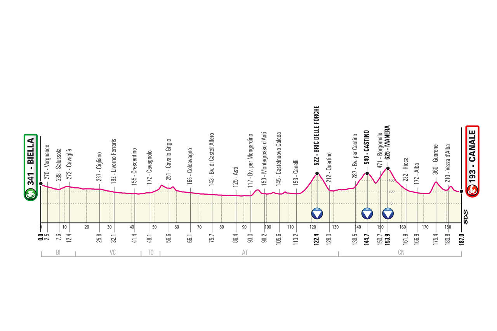
BIELLA - CANALE: Tappa mossa con un finale adatto ai colpi di mano con un susseguirsi di strappi e salite più o meno difficili. In particolare, a Guarene la breve e intensa salita probabilmente sarà il trampolino di lancio del vincitore.
4° TAPPA (Mar. 11/05)
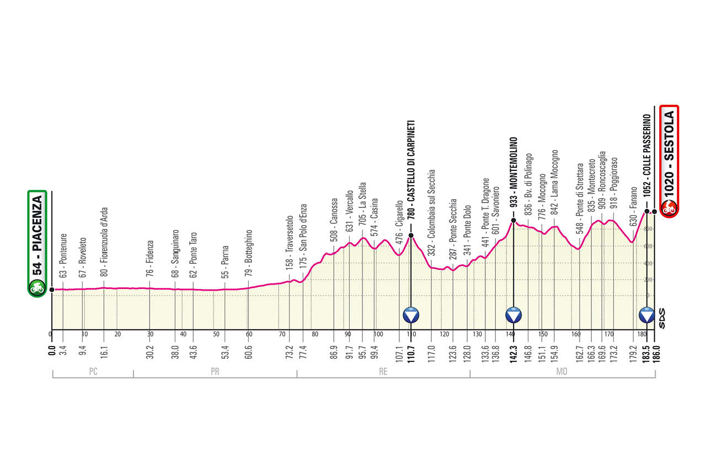
PIACENZA - SESTOLA:Tappa mossa appenninica. Dopo una prima parte pianeggiante si affrontano gli strappi dei Castelli Matildici per poi raggiungere Sestola dove la breve, ma intensa salita di Colle Passerino con le sue pendenze in doppia cifra determinerà la classifica all’arrivo.
5° TAPPA (Mer. 12/05)
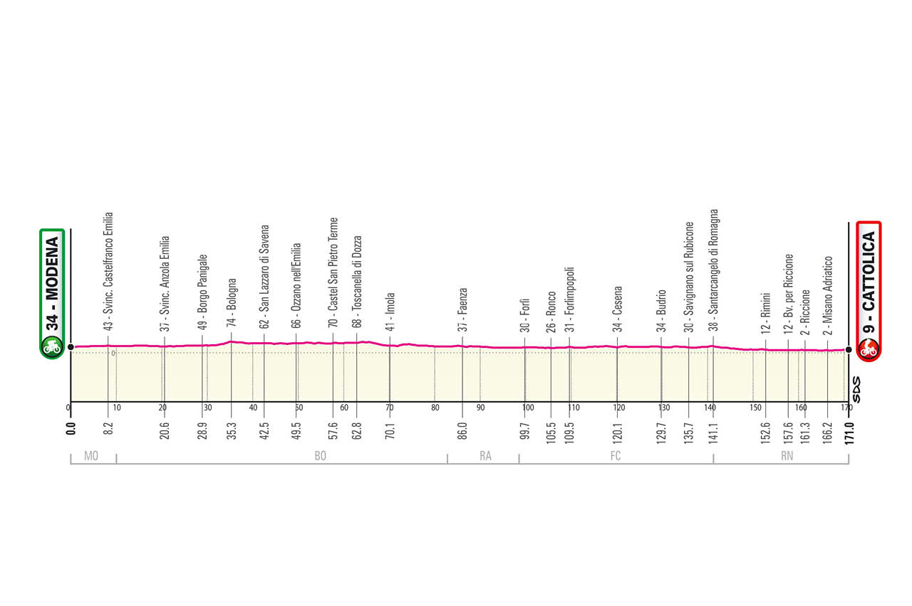
MODENA - CATTOLICA: Tappa completamente pianeggiante attraverso la pianura emiliano-romagnola che conduce alla volata del gruppo compatto nella città balneare.
6° TAPPA (Gio. 13/05)
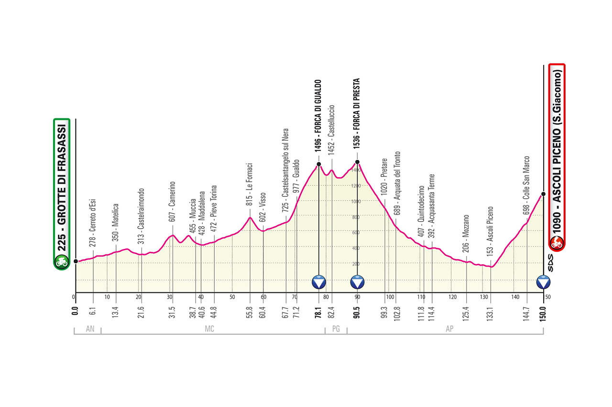
GROTTE DI FRASASSI - ASCOLI PICENO (SAN GIACOMO): Tappa di montagna che attraversa prima i monti Sibillini e le zone colpite dal recente terremoto per poi giungere al suo clou con la scalata inedita da questo versante con una lunga salita fino a San Giacomo.
7° TAPPA (Ven. 14/05)
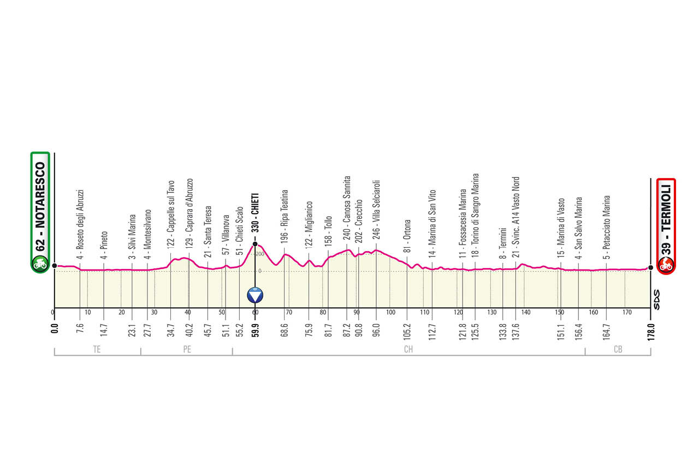
NOTARESCO - EMPOLI: Tappa per velocisti con qualche puntata nell’entroterra dove si affrontano alcune salitelle che non potranno comunque influenzare la conclusione. Da segnalare che l’ultimo chilometro presenta alcuni strappi e pendenze che potrebbero sfilacciare il gruppo lanciato verso la volata.
8° TAPPA (Sab. 15/05)
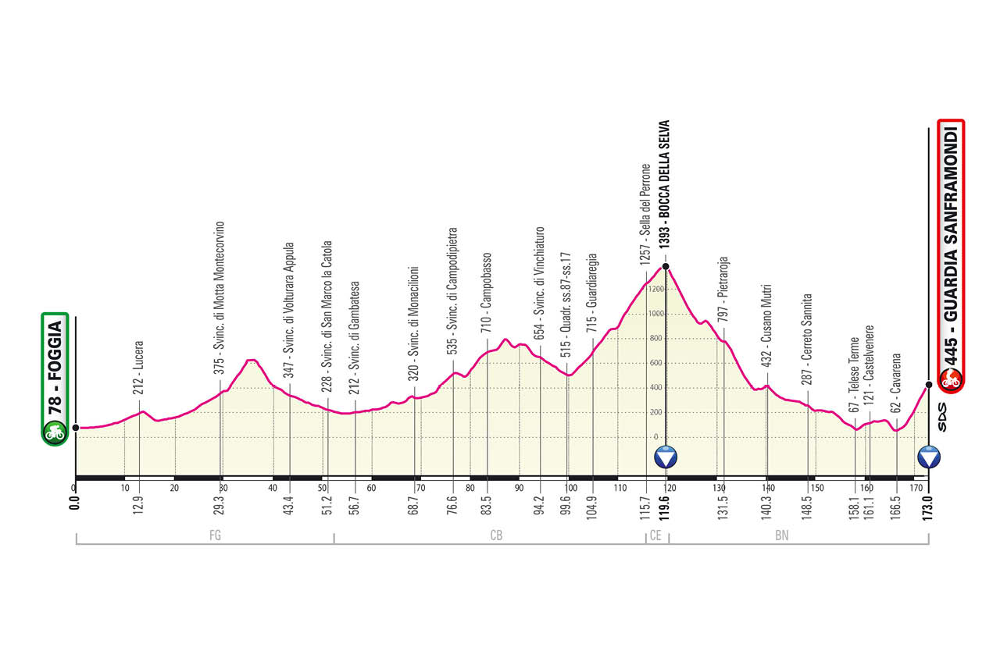
FOGGIA - GUARDIA SANFRAMONDI: Tappa di media montagna che affronta continui saliscendi dalla partenza fino a Campobasso. Si Scalano poi i monti del Matese superando il lungo GPM di Bocca della Selva. Lunga planata sulla piana Telesina dove gli ultimi chilometri con le loro pendenze piuttosto intense chiuderanno la tappa.
9° TAPPA (Dom. 16/05)
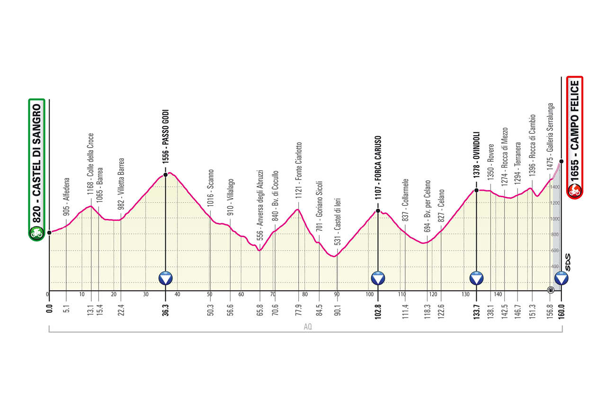
S
CASTEL DI SANGRO - CAMPO FELICE (ROCCA DI CAMBIO): Tappa breve, ma molto intensa interamente dentro l’appennino abruzzese. Si scalano in sequenza quattro salite di media pendenza per portarsi alla salita finale che negli ultimi 1800 m presenta un tratto sterrato lungo le piste della località sciistica di Campo Felice.
10° TAPPA (Lun. 17/05)
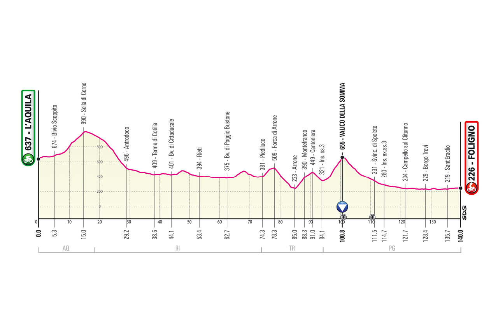
L'AQUILA - FOLIGNO: Tappa breve destinata alla volata di gruppo dopo le fatiche dei giorni precedenti e prima del giorno di riposo. Nessuna difficoltà particolare da segnalare per giungere a un arrivo da volata già collaudato sia al Giro che alla Tirreno-Adriatico.
11° TAPPA (Mer. 19/05)
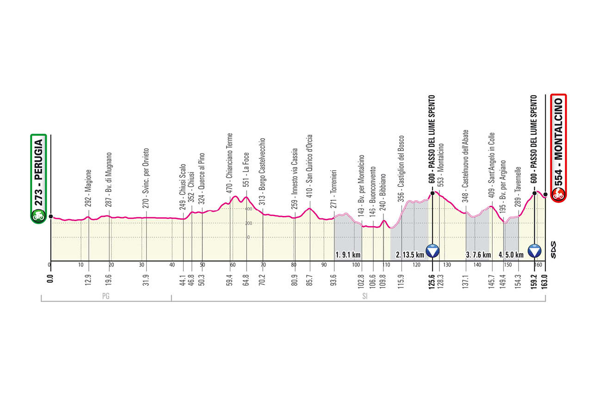
PERUGIA - MONTALCINO: Tappa breve, ma molto intensa. Gli ultimi 70 km presentano 35 km di sterrato divisi in 4 settori. Il primo è una vera salita impegnativa (Castiglione del Bosco), gli altri sono in leggera salita, ma la loro configurazione e il fondo stradale renderanno la tappa di Montalcino degna di un tappone alpino come difficoltà.
12° TAPPA (Gio. 20/05)
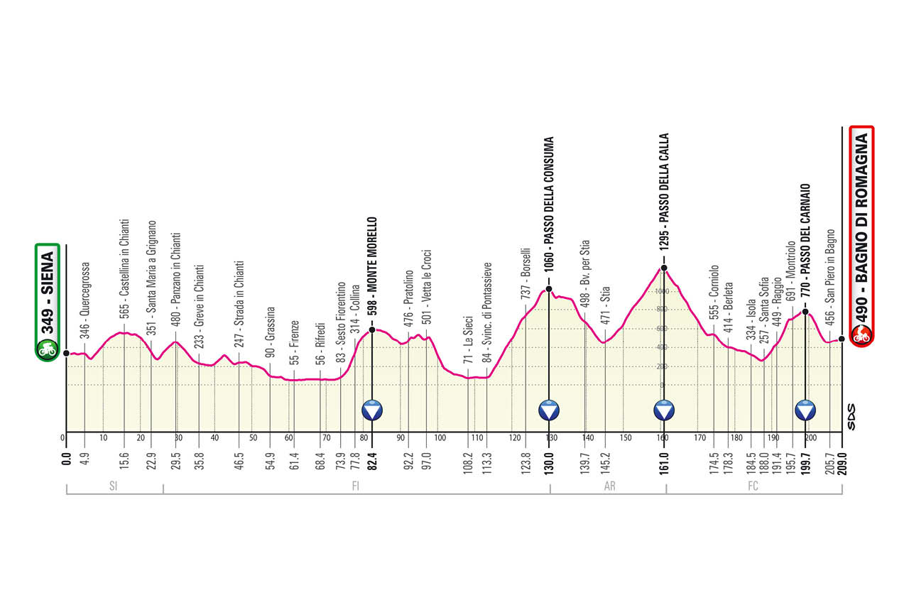
SIENA - BAGNO DI ROMAGNA: Tappone appenninico che omaggia Alfredo Martini passando dalla sua Sesto Fiorentino e Gino Bartali (è la tappa Bartali) passando da Ponte a Ema. Si scala il durissimo Monte Morello e poi le lunghe salite della Consuma e della Calla prima di terminare con probabilmente un gruppetto ristretto a Bagno di Romagna.
13° TAPPA (Ven. 21/05)
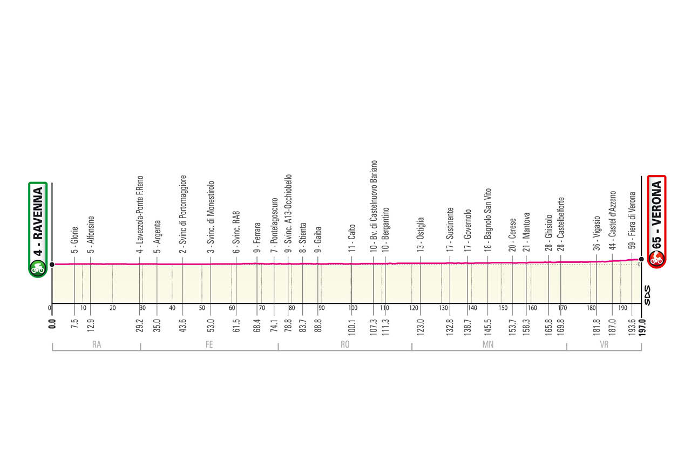
RAVENNA - VERONA: Tappa di pianura dedicata a Dante Alighieri. Si parte da Ravenna (vicino alla tomba del Poeta) per percorrere tutta la pianura fino a Verona (dove visse in esilio). Si transita anche da Bagnolo Po, terra di Learco Guerra che 90 anni fa indossò la prima Maglia Rosa della storia.
14° TAPPA (Sab. 22/05)
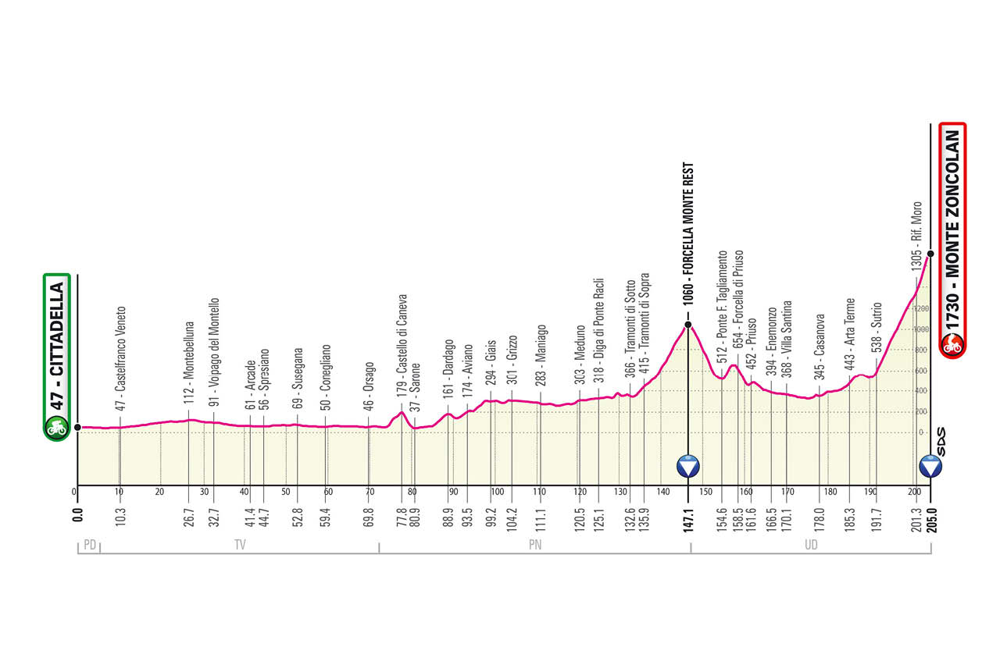
CITTADELLA - MONTE ZONCOLAN: Prima delle tappe di alta montagna del secondo fine settimana. Presenta solo la salita di Monte Rest lungo il percorso, ma il finale è durissimo. Si scala lo Zoncolan dal versante di Sutrio (2003 – Simoni) che presenta negli ultimi 2 km pendenze che toccano il 25/27% nel drittone finale appena prima del traguardo. La classifica generale subirà certamente una scossa.
15° TAPPA (Dom. 23/05)
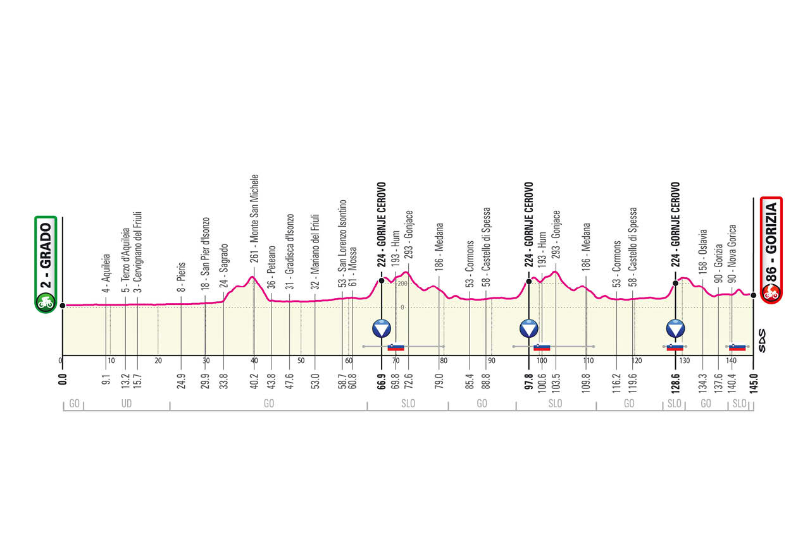
GRADO - GORIZIA: Tappa che percorre le colline del Collio Friulano, Goriziano e Sloveno. Un circuito ripetuto due volte costellato di brevi, ma duri strappi porta al finale con un ultimo sconfinamento a Nova Gorica prima di rientrare in Italia con un breve strappo a 3 km dall’arrivo.
16° TAPPA (Lun. 24/05)
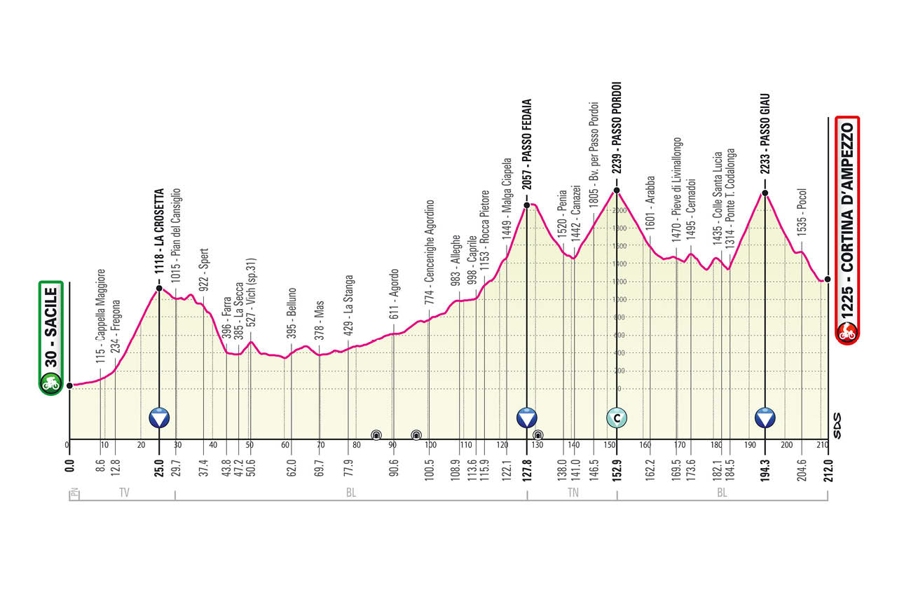
SACILE - CORITNA D'AMPEZZO: Tappone dolomitico classico. Con 212 km e 5700 m di dislivello sarà la tappa più impegnativa dell’intero Giro. Poco dopo la partenza di sale al Cansiglio (attraverso il passo della Crosetta da Vittorio Veneto) per scendere su Belluno e dopo Agordo affrontare in sequenza i Passi Fedaia (la Marmolada che consegnò a Pantani la Maglia Rosa 1998 – Montagna Pantani), Pordoi (cima Coppi) e Giau con la lunga e impegnativa discesa fino a Cortina d’Ampezzo (città olimpica del 2026).
17° TAPPA (Mer. 26/06)
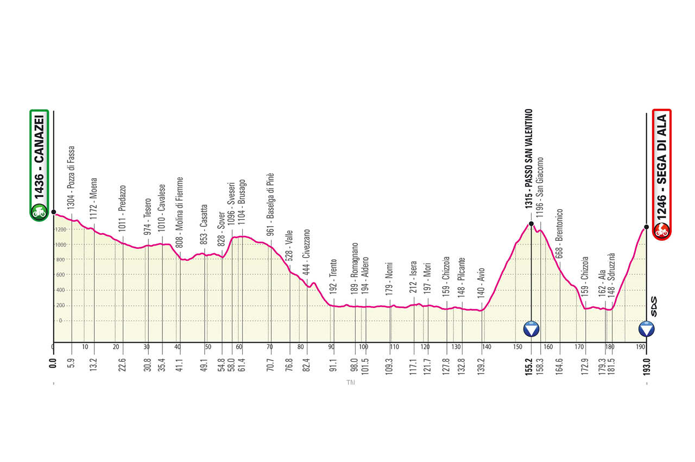
CANAZEI - SEGA DI ALA: Ultima tappa di montagna del Nord-Est dopo il secondo e ultimo giorno di riposo. La tappa è estremamente impegnativa nel finale. Dopo una lunga discesa fa Canazei fino a Mori. Negli ultimi 50 km si scalano le due lunghe e molto dure salite di Passo San Valentino e Sega di Ala. Finale molto duro che si presta agli attacchi dalla media distanza per chi dovesse recuperare in classifica dopo il tappone di Cortina d’Ampezzo.
18° TAPPA (Gio. 27/06)
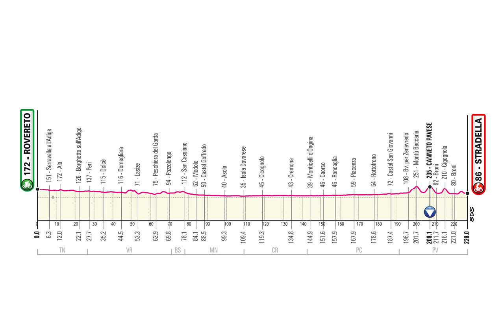
ROVERETO - STRADELLA: Ultima volata di gruppo. Potenzialmente una volata, ma le squadre dovranno lavorare molto durante l’attraversamento di tutta la Pianura Padana per portare i capitani all’ultimo chilometro. Nel finale si affrontano alcuni brevi strappi che potrebbero scremare un po’ il gruppo prima dello sprint.
19° TAPPA (Ven. 28/06)
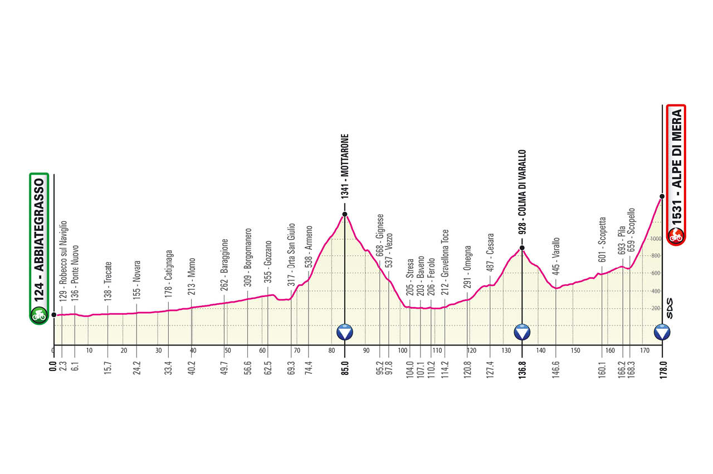
ABBIATEGRASSO - ALPE DI MERA: Tappa di montagna con spazi di recupero tra le salite. Dopo un avvicinamento molto classico lungo la pianura piemontese si scala il Mottarone (dopo molti anni di assenza) per costeggiare il Lago Maggiore e dopo Omegna scalare il Passo della Colma che porta a Varallo. Lunga ascesa in falsopiano fino alla salita secca finale di lunghezza media, ma con pendenze molto elevate specie nel finale.
20° TAPPA (Sab. 29/06)
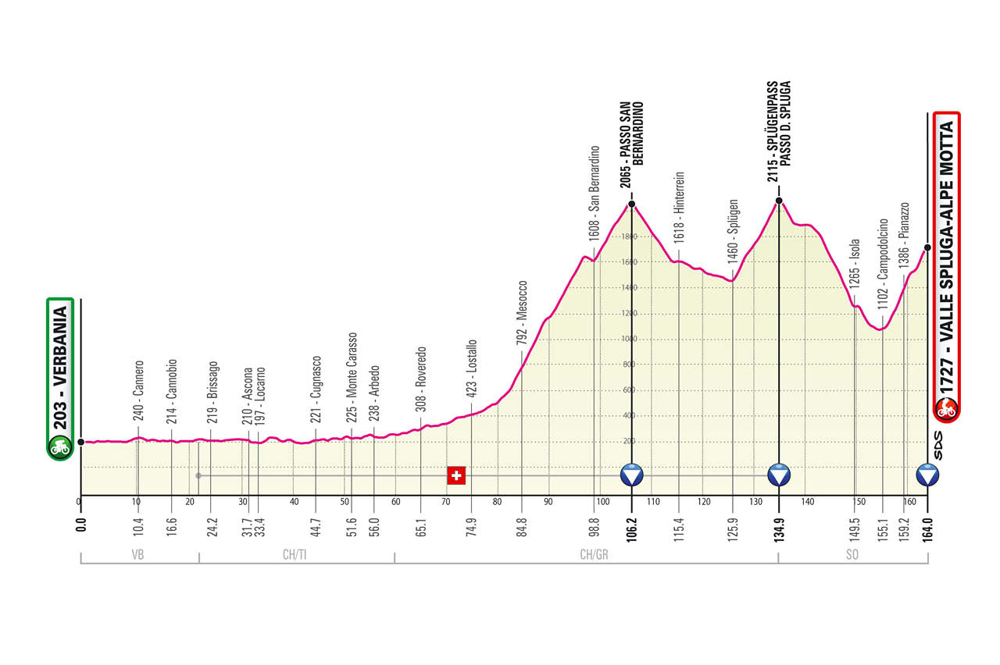
VERBANIA - VALLE SPLUGA (ALPE MOTTA): Ultimo tappone alpino. Dopo la partenza si sconfina in Svizzera per scalare l’interminabile Passo di San Bernardino e rientrare in Italia attraverso la salita breve e dura del Passo dello Spluga. La salita finale percorre la “vecchia strada” di Madesimo con pendenze molto impegnative per poi arrivare qualche chilometro oltre gli arrivi classici con un ulteriore incrudimento del finale di tappa.
21° TAPPA (Dom. 30/06)
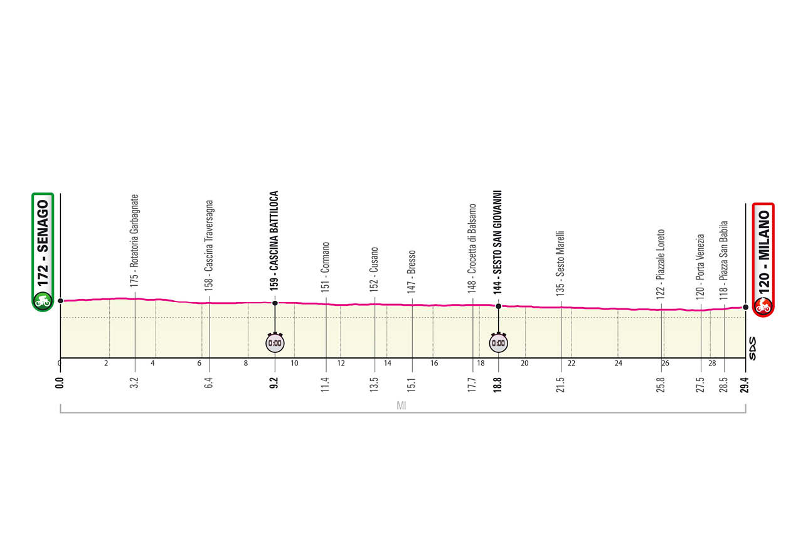
SENAGO - MILANO TISSOT ITT: Crono divisibile in due parti. La prima parte un po’ articolata con tratti rettilinei, ma anche curve e rotatorie per portarsi a Sesto San Giovanni prima e Milano poi dove il percorso diventa praticamente sempre rettilineo fino al classico finale accanto alla maestà del Duomo.
❮
❯